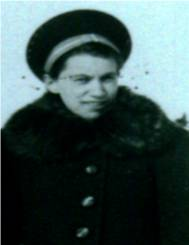
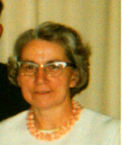

The Family Chronicle
N0.54 November 24, 2003
__________
Elinor Jean (Glendenning) Taylor (June 10, 1922 – February 22, 1973)

Elinor taken in 1940
Elinor, her Dad called her Nen, was born in Canada and attended the Little Branch School to the end of Grade 8. She then wrote High School Entrance exams and attended high school classes were started in the Bay du Vin church.
She usually walked to Bay du Vin, a distance of 5 miles, but sometimes rode a bicycle. In the winter she boarded at Barbour Williston’s. On a beautiful sunny day in early September, 1935, I walked with Elinor to my first day at school.
By 1933, Grace, Venetia and Lillian had left home and Elinor would have been the only daughter at home to help Mum. With Dad and five boys at home, while still going to school, and without electricity or running water, the work would have been heavy, indeed.
Elinor met Earl Alexander Taylor (May 10, 1916 – December 23, 1969) when he worked and stayed at home. They were married at the Presbyterian Manse in Chatham on February 17, 1940 and had seven children, Gerald Ernest, Robert Earl, Sandra Jean, David Walter, Virginia Elinor, Francis Elmer and Kenneth Eldon Doring. They lived at the Branch until, I think, Earl went in the army then they bought a house on Harriman Lane in Loggieville. As best I can remember, Elinor stayed in Loggieville all the time Earl was in the service.
Earl was discharged from the army on February 15, 1946 and worked at the Chatham air base. They continued to live in Loggieville.
In the summer of 1949, Elinor and Earl and family moved to Black River. Alex MacDonald had been killed in an accident and W. S. Loggie Company held the mortgage on his property. Elinor turned over their house in Loggieville to Loggie's and paid the difference - $300. I moved their belongings from Loggieville to Black River in the 1949 red Chev ½ ton truck. On one trip, we stopped to see Norm who was cutting grain in the field below John’s house.
Elinor was active in St. Paul’s Presbyterian Church being a member of both the Women’s League and the Presbyterian Missionary Society, a member of the Women’s Institute and an active Member of the Black River Community Hall Committee. The hall had burned and a new building was constructed. (This was the second time that the Black River Hall had burned.). She phoned me to tell me about the fire; a few days later she went into the hospital and died after a brief illness.
Once when having supper after a day digging potatoes, we were sitting at the dining room table. Uncle Jim was there because it was the custom for neighbours to exchange labour while cutting wood, threshing, picking potatoes etc. It was dark so there was an oil lamp on the table. Elinor went to reach across for butter and poked her knife through the lamp globe. Of course, the flame went out as a result of the air rushing in.
Elinor wrote regularly when I was in England and her letters were always newsy. At Christmas of 1955 – my first Christmas away from home, I recall coming back to the residence late on Christmas day to find a letter waiting for me from Elinor. (Only in England would mail be delivered on Christmas day.)

Elinor - Undated
Elinor was a “high-energy” person – some may say it was a nervous energy. She was a good worker, had a quick turn of mind, was fiercely loyal, and quick to support or defend family members. She also had a temper. Once when she was young, Mum sent the youngsters upstairs to make their Valentines. (Ken says that Jamie Mortimer and Ward Godfrey were at home at the time). Elinor and Norm had a spat and Norm tried to take the scissors from her and cut his hand. Elinor enjoyed hockey and was a fan of the Montreal Canadiens. She was a good letter writer and wrote to her son, Robert, every day but two during the years he lived in Toronto. I forget the reason for the first day she did not write but the second was the day she was admitted to the hospital just before she died.
As her family got older, Elinor did housework for a number of people in Chatham and at CFB Chatham. She also worked at the Miramichi Seniors’ Home in Chatham and at the Rehabilitation Centre.
On one of our visits from Ottawa to New Brunswick, Elinor and Kenneth returned with us and stayed a week or two. We had a tent trailer at the time and I remember camping near Grand Falls on the return trip. She also visited us in Charlottetown.
Earl
had purchased a beautiful cream, chrome and red bicycle – double
bars, handle bars and all. It was a far cry from the old bicycle
which Walter had as a kid and which we, and half Black River,
learned to ride on. Sometimes
Earl would take me on the parcel
carrier; sometimes he even let me take it by myself. One evening,
just at dusk, he took me across to the field just behind Uncle Jim’s
shed where Uncle Jim was burning piles of brush.
The following tribute was written by Mrs. Donald Angus MacDonald.
To Elinor
Today I stood beside your silent bier,
Sweet fragrant flowers, tokens of esteem
Brought me thoughts of other days,
I see again your ready smile and kindly ways.
I feel your hand upon my arm
To aid me down the steps.
And see your keen and friendly interest
In every one you met.
You gave yourself to every worthy cause.
Your untiring energy you could not stay,
Our whole community is a richer place
Since you have passed this way.
The Master called you to a higher post
But this is not the end,
We’ll meet again, and you will know
How proud I am, that I have called you friend.
C. A. MacDonald, February 24, 1973
The Chronicle is an occasional newsletter published by Don Glendenning It is intended to solicit and provide information about family tree matters. Comments, enquiries and information may be sent to 62 Queen Elizabeth Drive, Charlottetown, PEI, C1A 3A9. Tel: 902-892-5859 Email: dglende @attglobal.net. Feel free to make and pass along copies of this newsletter.